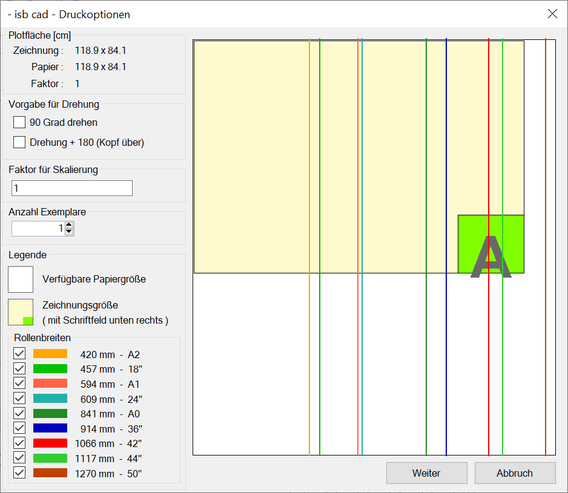

|
Alternativ (aus dem ISBCAD Hauptmenü):
|


.gif)
Einstellungen für die Druckausgabe. Bevor die eigentliche Druckausgabe startet, können Sie im Dialog ISBCAD Druckoption noch Einstellungen vornehmen.
 |
Plotfläche [cm]
Nur zur Information.
Zeichnung:
Angabe der Breite und Höhe der Zeichnung bzw. des Ausschnitts.
Papier:
Erforderliche Breite und Höhe des Ausschnitts auf dem Papier. Berücksichtigt die Drehung und den Faktor für die Skalierung.
Faktor:
Zeigt den Umrechnungsfaktor Papier/Zeichnung.
Vorgabe für Drehung
90 Grad drehen
Die optimale Einstellung wird vom Programm vorgeschlagen. Wenn Sie dieses ändern, wird ggf. mit einem korrigierten Faktor gedruckt, damit der Ausschnitt auf das Papier passt.
Drehung + 180 (Kopf über)
Zusätzlich zur Drehung wird der Ausdruck um 180° gedreht, damit die Zeichnung auf dem Kopf ausgegeben wird. Einige Plotter beeinflussen diese Drehungen. In diesem Fall sollten Einstellungen wie „Autorotate“ oder „Schachteln“ am Plotter abgeschaltet werden.
Faktor für Skalierung
Wenn automatisch berechnen/anpassen eingestellt ist, kann hier kein Wert eingegeben werden. Im anderen Fall kann hier noch eine Änderung vorgenommen werden.
[Datei | Drucke/Plotte | Einst | Plotter Konfiguration (Dialog) | Registerkarte Treiber | Skalierung → automatisch berechnen/anpassen].
Anzahl Exemplare
Der Wert aus dem eingestellten Ausgabeprofil wird angezeigt. Er kann hier geändert werden.
Legende
Verfügbare Papiergröße
Die zur Verfügung stehende Papiergröße wird durch Linien der gewählten Rollenbreiten angezeigt.
Zeichnungsgröße
Stellt die Zeichnung dar. Das grüne Feld mit dem „A“ markiert die normale Lage des Schriftfeldes, unten rechts.
Rollenbreiten
Es stehen die gängigen Breiten zur Verfügung. Setzen Sie Haken in die Zeile, die der Rollen-/Medienbreite Ihres Plotters entspricht. Die zugehörige(n) Linie(n) werden in der Vorschau gezeigt.
Rollenbreiten
Auswahl einer oder mehrerer Rollenbreiten für die optimale Ausrichtung des Ausdrucks.
Die ausgewählten Rollenbreiten werden im Vorschaubereich durch die entsprechende Linienfarbe dargestellt.
Schaltflächen

Startet die Druckausgabe. Gegebenenfalls werden weitere, geräteabhängige Dialoge aufgerufen (vgl. Meldungen in der Windows-Taskleiste).
Zwei Blattränder vorhanden?
Wenn in der Plotterkonfiguration die Option mit Rand drucken aktiviert ist und ein unter [Konst 3 | Blattr] eingestellter Blattrand auf der Zeichnung vorhanden ist, erscheint folgende Meldung:
|

Klicken Sie auf Nein, um den Druckvorgang abzubrechen. Wenn Sie auf Ja klicken, werden beide Blattränder ausgegeben!
Deaktivieren Sie in diesem Fall einen der eingestellten Blattränder:
a)Entfernen Sie in der Plotterkonfiguration den Haken bei mit Rand drucken.
b)Löschen oder verschieben Sie den unter [Konst 3 | Blattr] eingestellten Blattrand in eine andere oder neue Folie und blenden Sie diese aus.
Siehe: Folie transformieren über Fenster, Neue Folie anlegen (Folienmanager)
Führen Sie anschließend die Druckausgabe erneut aus.

Bricht die Druckausgabe ab.